It knows when a task is impossible
On levels sealed one step short of a win, AWM proves in Lean that no route can win; frontier agents without it can only guess.
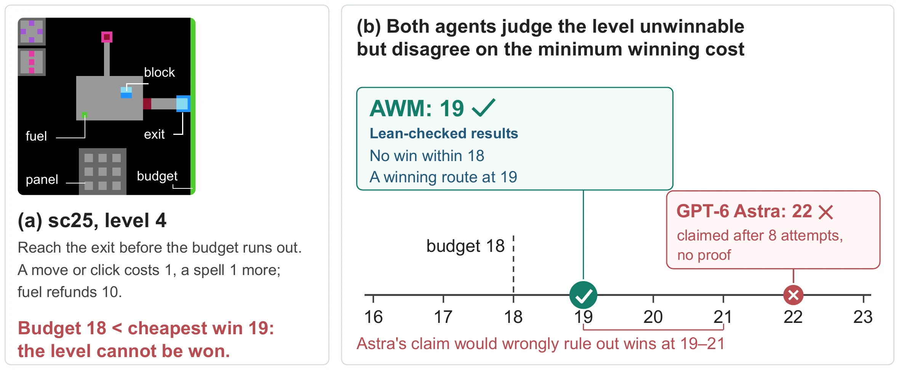
AWM learns a mathematical model of an unknown game from play, and proves in Lean what can and cannot be won.
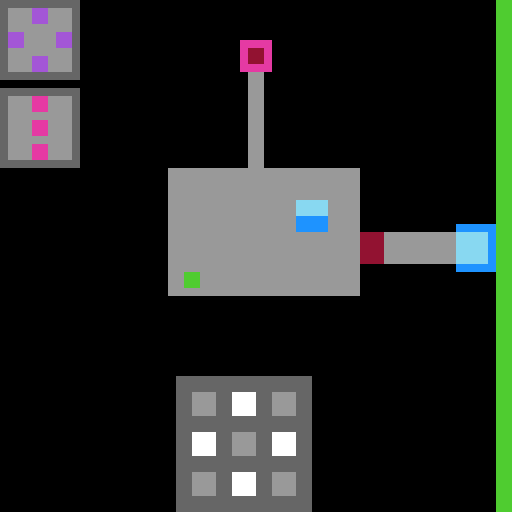
Sealed level 4 of sc25
The route playing here is the game's cheapest win, found by exhaustive search on the engine and replayed on it: with a budget of 18 it runs out one action before the goal; with 19 it wins.
On levels sealed one step short of a win, AWM proves in Lean that no route can win; frontier agents without it can only guess.

Every game becomes a handful of typed objects and named rules, and Lean replays every winning run against them.
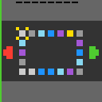
lp85: the certified run that clears every level. Lean replays the same actions against the six rules of AWM's model.
Every public ARC-AGI-3 game, played from scratch. Each clip is a certified run; Lean replays it against the model AWM learned for that game.
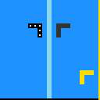
ar25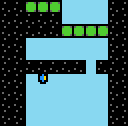
bp35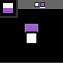
cd82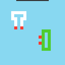
cn04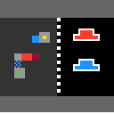
dc22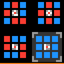
ft09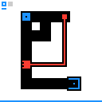
g50t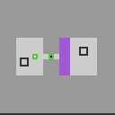
ka59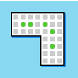
lf52lp85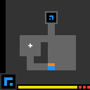
ls20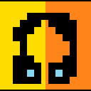
m0r0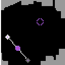
r11l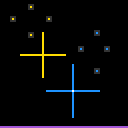
re86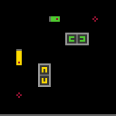
s5i5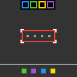
sb26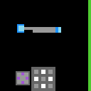
sc25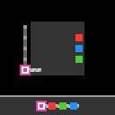
sk48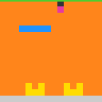
sp80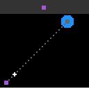
su15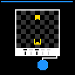
tn36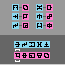
tr87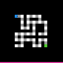
tu93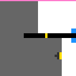
vc33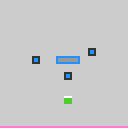
wa30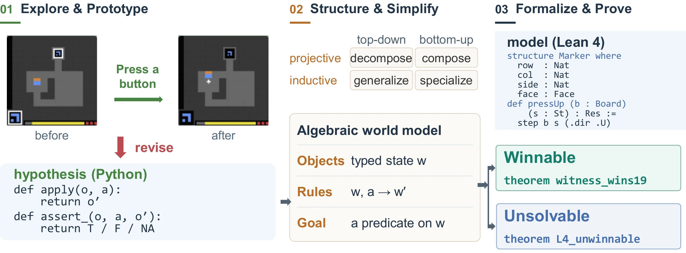
AWM explores the game and writes each guess about its rules as an executable Python hypothesis, tested and revised against every observed transition.
It structures the hypotheses into typed objects and shared rules, and simplifies them with transformations inspired by category theory.
It encodes the model in Lean 4 and proves, with kernel-checked theorems, which levels can and cannot be won.
Nothing here has to be taken on trust. Each game page offers the agent's files, unedited, and the steps to re-run its Lean proofs.